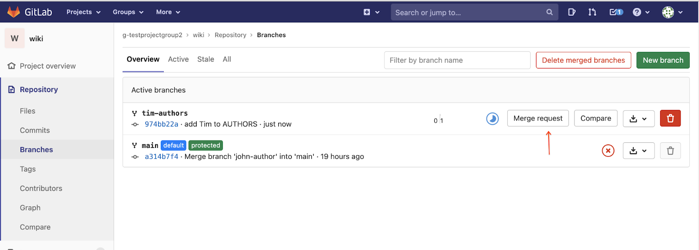

In this codelab, you'll prepare for Milestone 5 by getting familiar with another team's repository. Also, you'll create merge requests to update their project.
This should be completed with your project groups.
Prerequisites
- Cloud Shell
- Git
- Linux command line
What you'll need
- Google account
- GitLab account
- Web browser (Google Chrome recommended)
What you'll learn
- Push branches to another team's repository
- Submit a merge request to another team's repository
- Review and merge a merge request from another team.
- Resolve conflicting merge requests in the GitLab web interface
The instructors have granted you Developer permissions to another team's repository in GitLab. Find their repository and clone it to your development environment.
- Navigate to the Projects page in GitLab ( techx-gitlab.640k.net/dashboard/projects).
You should see another wiki repository there. In this example, g-testprojectgroup2 refers to the team to which you'll be contributing your changes.
- Navigate to the other team's wiki repository.
- Click the "Clone" button and copy the text from "Clone with SSH".
Next, clone the other team's repository to your development environment.
- Open Cloud Shell (Terminal).
- Ensure you are in the directory where you want to be before cloning the other team's repository.
See your current directory with the pwd command.
pwd
You should see /home/YOUR_USERNAME or wherever you intend to clone the repository.
List the contents of this directory with the ls command.
ls
You should see the directories of the other repositories you've cloned, including your wiki directory.
- Since the other team's repository is also named "wiki", you'll need to pass an additional argument to the
git clonecommand that specifies the destination directory name. As you can see from this summary of the command, there is an optional "" parameter after the required "" parameter.
SYNOPSIS
git clone [OPTIONS] [--] <repository> [<directory>]
Therefore, to clone the other team's repository to a directory named wiki-contrib, run the following command (replacing the repository with the one you copied from GitLab).
git clone REPOSITORY_FROM_GITLAB wiki-contrib
- Check that the
wiki-contribrepository was created by listing its contents.
ls wiki-contrib
Get your editor setup to contribute to the other team.
- Open Cloud Shell Editor.
- Open the
wiki-contribdirectory corresponding to the other team's wiki.
- Open the terminal panel in Cloud Shell Editor.
- The team you'll be contributing to may have extra Python dependencies. Install those with the pip command.
pip install -r requirements.txt
To get practice contributing to the other team's wiki, add your name to AUTHORS.txt.
- Create a new branch. Prefix the branch name with your username to prevent conflicts. For example, if your username is
tim, create a branch calledtim-authors.
git checkout -b tim-authors
- Edit AUTHORS.txt and add a line at the bottom (or perhaps alphabetically) with your name and email.

- Add the AUTHORS.txt file to your Git staging area.
git add AUTHORS.txt
- Commit your changes.
git commit -m 'add YOUR_NAME as an author'
You should not commit changes directly to the main branch of the wiki you are contributing to. Instead, create a "merge request" so that the other team can review your code before merging it.
- Push your changes to the other team's repository.
Replace tim with your username.
git push origin tim-authors
- In the previous command, you may have seen a link like:
remote: To create a merge request for tim-authors, visit:
remote: https://techx-gitlab.640k.net/g-testprojectgroup2/wiki/-/merge_requests/new?merge_request%5Bsource_branch%5D=tim-authors
Navigate to that link.
If no link appeared, open the Branches page in GitLab and click the "Merge request" button. 
- In the page that appears, scroll down and click the changes tab.
- Verify that the AUTHORS.txt file has your changes.
- The Pipelines tab contains the Continuous Integration jobs that the other team has setup in Milestone 4. View those logs to check that your changes have not introduced test or lint failures.
- Click the "Submit merge request" button to create your merge request.
You may receive feedback about your merge request. If you do, address any feedback the other team gives you by pushing new commits to this same branch.
Note: "Merge request" is the term GitLab uses to represent a request to merge your changes into the main branch. Other tools use different terms. For example, GitHub calls this a "pull request (PR)". Critique, Google's internal code review tool, calls this a "change list (CL)".
You should have received several merge requests from another team on your own wiki project. Review these.
Find a merge request to review.
- Open your own wiki project on GitLab.
- Navigate to the Merge Requests page.

- Click one of the merge requests to review it.
- In the review page, click the changes tab to see the proposed code changes.
Add review comments (Optional)
In most merge requests, there is something that needs to be changed. No programmers writes perfect code all the time! GitLab provides a feature for providing feedback.
- If something looks wrong, hover over the line number. Click the "Add a comment to this line" button to share a comment with the author about that line.
Use the "Add comment now" button to immediately create a comment.
Note: The "Start a review" button is useful if you want to draft several comments and send them out all together when you are finished with your review.
- If all is well, click the "Approve" button to indicate that you have reviewed the code.

Resolve conflicts
Since several merge requests modified the same file, conflicts are quite likely. Thankfully, these can usually be resolved from the GitLab interface.
- If you see conflicts, click the "Resolve conflicts" button.

- The interface provides a couple of options: "Use ours" and "Use theirs". In this case, we want a combination of both, so click the "Edit inline" button to edit the file directly.
- Remove any merge conflict indicators and combine the file as needed.
- Click the "Commit to source branch" button to add a commit to this merge request resolving the conflicts.
- Navigate to the "Changes" tab to double-check that the conflict was resolved correctly.

Merge the merge request
- Click the "Merge" button to actually merge this code into the main branch.

- The "Merge request" is now merged.

Double-check that the code has been pushed by viewing the code on GitLab.
If you finish early, contact the other teams you'll be working with to set up a time to talk about Milestone 5 together.